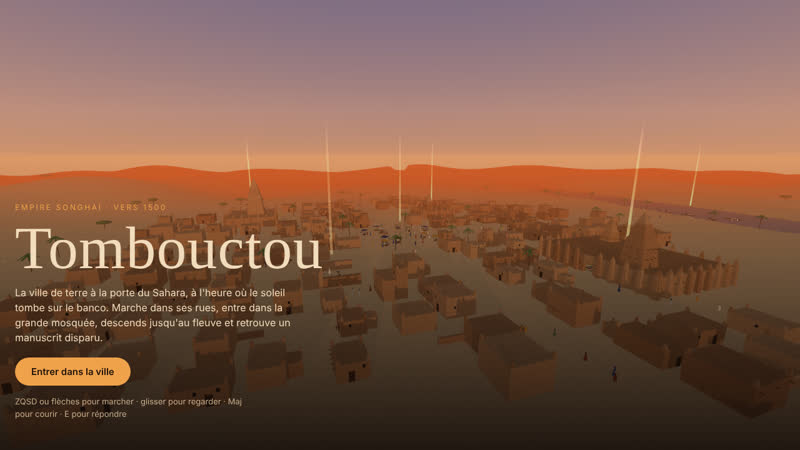
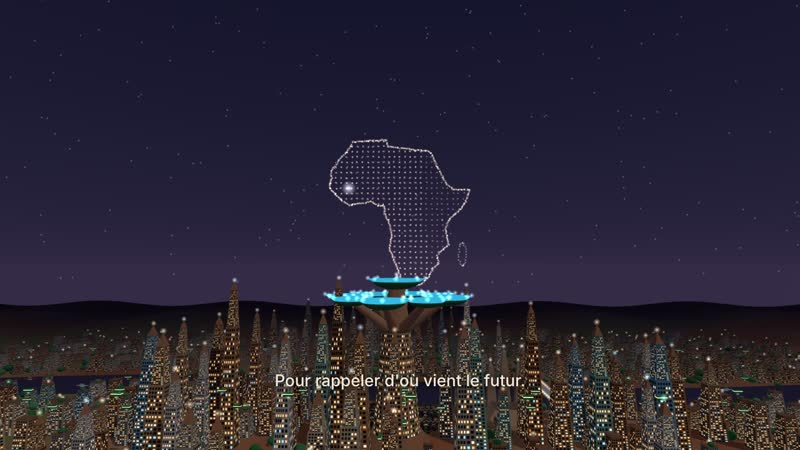
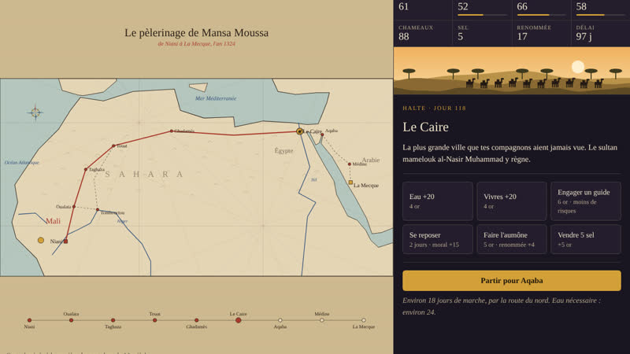
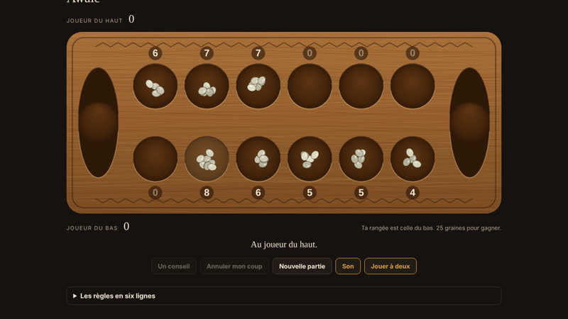
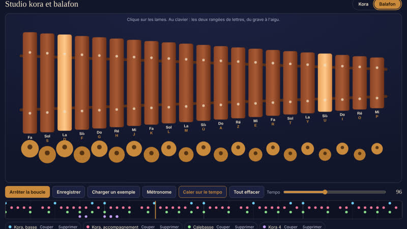
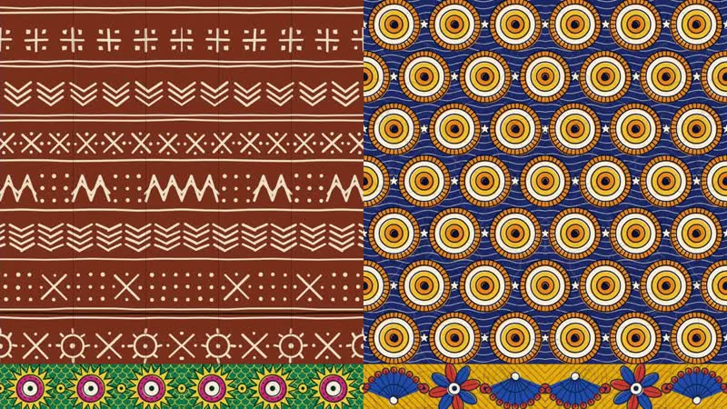
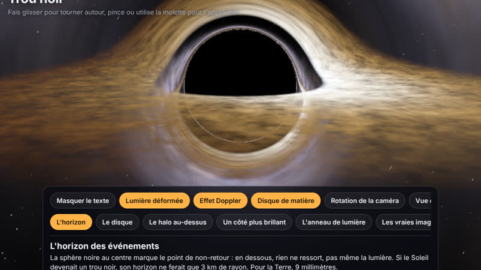

Mali · Afrique de l'Ouest
Sept créations en une soirée
Un monde à explorer, un film, deux jeux, un studio de musique, un atelier de tissus et une simulation. Tout tourne dans le navigateur, sans rien installer.

Tombouctou au crépuscule
La ville de terre vers 1500, à explorer à pied, avec une quête, une mosquée à visiter et le fleuve.

Bamako 2150
Une journée dans la capitale du futur, du Niger aux sotramas volants, en une minute.

La caravane de Mansa Moussa
Mène l'empereur du Mali jusqu'à La Mecque en 1324, à travers le Sahara.

Awalé
Le jeu de graines contre un ordinateur qui calcule jusqu'à 14 coups à l'avance, ou à deux.

Studio kora et balafon
Deux instruments jouables au doigt ou au clavier, avec un enregistreur de boucles.

Atelier bogolan, wax et kente
Écris un mot, obtiens son tissu, et garde-le en fond d'écran.

Trou noir interactif
Tourne autour d'un trou noir et vois la gravité courber la lumière.